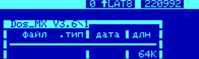

www.spetsialist-mx.ru
САЙТ О ПК "СПЕЦИАЛИСТ" И ЕГО КЛОНАХ
| |
|
| ГЛАВНАЯ | |
| МИКРОПРОЦЕССОР | |
| КОНТРОЛЛЕР НГМД | |
| ПАМЯТЬ | |
| ИНТЕРФЕЙСЫ | |
| КОНТРОЛЛЕР ЦВЕТА | |
| ПРОГРАММЫ | |
| ИГРЫ | |
| СПЕЦИАЛИСТ МХ2 | |
| ПЛИС | |
| ССЫЛКИ | |
| ОБРАТНАЯ СВЯЗЬ |
ИНТЕРФЕЙСЫ В ПК "СПЕЦИАЛИСТ МХ"
Интерфейс КР580ВВ55 (адреса обращения FFE0H ... FFE3H) служит для обслуживания клавиатуры, выработки звуковых сигналов и связи с магнитофоном (как и в схеме "Стандартного" Специалиста). В Специалисте МХ не задействован вывод 13 (отсутствует схема начального пуска), а с вывода 11 берётся сигнал индикации светодиодом режима "РУС / LAT".
{kind=link}
Ниже, в таблице расписаны порты ППА.
Вывод порта |
Назначение |
Устройство |
PA7 |
5-й столбец
|
Клавиатура |
PA6 |
6-й столбец
|
-//- |
PA5 |
7-й столбец
|
-//- |
PA4 |
8-й столбец
|
-//- |
PA3 |
9-й столбец
|
-//- |
PA2 |
10-й столбец
|
-//- |
PA1 |
11-й столбец
|
-//- |
PA0 |
12-й столбец
|
-//- |
PB7 |
1-я строка
|
-//- |
PB6 |
2-я строка
|
-//- |
PB5 |
3-я строка
|
-//- |
PB4 |
4-я строка
|
-//- |
PB3 |
5-я строка
|
-//- |
PB2 |
6-я строка
|
-//- |
PB1 |
Клавиша "НР"
|
-//- |
PB0 |
Вход считывания
|
Магнитофон |
PC7 |
Выход на запись
|
Магнитофон |
PC6 |
Светодиод "РУС"
|
- |
PC5 |
Выход звука
|
Усилитель |
PC4 |
-
|
- |
PC3 |
1-й столбец
|
Клавиатура |
PC2 |
2-й столбец
|
-//- |
PC1 |
3-й столбец
|
-//- |
PC0 |
4-й столбец
|
-//- |
Клавиатура состоит из матрицы нормально разомкнутых контактов. Все функции клавиатуры (сканирование матрицы, защита от дребезга, формирование кодов символов и так далее) реализованы программно. Также программным способом осуществляется связь магнитофоном и генерация звукового сигнала.
Ещё один вид на распайку клавиатуры.
Клавиатура разделена на ряд функциональных групп, которые необходимо усвоить и придерживаться в новых пользовательских программах.
ВК - реализует функцию разрешения, подтверждения выполнения команд, директив;
СТР - реализует функции прерывания, отмены команд, директив и преимущественно внутри программ;
АР2 - реализует те же функции, что и СТР, но преимущественно на более высоком уровне (прерывает, отменяет работу самой программы);
РУС / LAT - переключение регистров символьных клавиш; постоянное нажатие клавиши замедляет вывод на экран;
НР - прерывает работу некоторых функций BIOS - a (C806H, C83FH, C842H), а также осуществляет, на время нажатия клавиши, переключение верхнего / нижнего регистров. Если включен режим КОИ - 7, то вместо ввода прописных латинских символов включается режим ввода псевдосимволов, фиксированное переключение верхнего / нижнего регистров осуществляется нажатием клавиш НР / РУC / LAT. При постоянном нажатии на клавишу реализуется режим ускоренного ввода серии символов.
Нижний ряд предназначен для оперативного перемещения курсора или текста на экране в программах - редакторах.
Верхний ряд предназначен для служебных функций. Часть из них:
F1 ... F7 - функции переназначаемые программами пользователя и отображаемые ими на нижней служебной строке;
КОИ - переключение режима КОИ - 7 / КОИ - 8;
F8 - выбор плотности записи на ленту, а также выбор типа принтера;
F9 - включение / выключение режима эхопечати на принтер.
Индикация режимов осуществляется в верхней (служебной) строке экрана в двух тёмных "окошках". Во втором "окошке" (правом) отображается дата, введённая при инициализации системного пакета. А в первом "окошке" отображается несколько текущих режимов: первый символ - цифры 0...2 означают плотность записи на ленту и тип принтера в режиме эхопечати. 0 - 1200 Bod / D100MPC, 1 - 1800 Bod / ROBOTRON, 2 - 2400 Bod / EPSON. Второй символ отображает включение режима эхо - печати [p]. Третий символ отображает стрелкой выбранный верхний / нижний регистр. Следующие три символа отображают выбранный русский / латинский регистр. А последняя цифра 7 или 8 отображает вид кодовой таблицы - КОИ - 7 или КОИ - 8.
Контроллер от Vinxru позволяет подключить PS/2 клавиатуру и к "Специалисту МХ".

ПОРТ ПРОГРАММАТОРА
Порт программатора на КР580ВВ55 (адреса обращения FFE4H...FFE7H) служит для выдачи сигнала разрешения вывода звука (вывод 4) и подключения программатора, принтера и других устройств. Монитор SP580 применяет схему программатора указанную ниже.
Узел ввода характеризуется повышенной (на порядок) чувствительностью. Особенностью схемы является режим генерации, проявляющийся при отсутствии входного сигнала. Этот режим является признаком нормальной работоспособности схемы. При замкнутом входе частота генерации около 18 кГц, а при разомкнутом - 500 Гц, При появлении входного сигнала, от 5 мВ. и выше, генерация прекращается и схема чётко отрабатывает входной сигнал, делая "читабельными" все Ваши кассеты. Узел вывода нормирует крутизну фронтов выходного сигнала и отсекает помехи общего провода ПЭВМ. Это уменьшает динамические, амплитудные и фазовые искажения в схеме магнитофона.